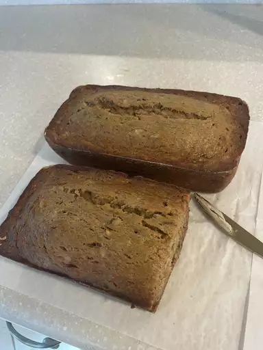

Banana Banana Bread

Description
This banana bread is not only Allrecipes' #2 recipe of all time, it has made headlines! Recipe creator Shelley Albeluhn was featured in the Toronto Star in 2019 and revealed that she never expected her banana bread hack to lead to millions of views and over 16,000 ratings.
As she explained in the article, "I remember thinking: 'Let's see how banana-y we can get this, so let's put in another banana, and then another and another.'" Turns out Shelley's extra-fruity take on banana bread has made thousands of home cooks happy since she shared her recipe 22 years ago.
Ingredients
- 2 cups all-purpose flour
- 1 teaspoon baking soda
- ¼ teaspoon salt
- ¾ cup brown sugar
- 2 eggs, beaten
- 2 ⅓ cups mashed, overripe bananas
Steps
- Preheat the oven to 350 degrees F (175 degrees C). Lightly grease a 9x5-inch loaf pan.
- Combine flour, baking soda, and salt in a large bowl. Beat brown sugar and butter with an electric mixer in a separate large bowl until smooth. Stir in eggs and mashed bananas until well blended. Stir banana mixture into flour mixture until just combined. Pour batter into the prepared loaf pan.
- Bake in the preheated oven until a toothpick inserted into the center comes out clean, about 60 minutes. Let bread cool in pan for 10 minutes, then turn out onto a wire rack to cool completely.